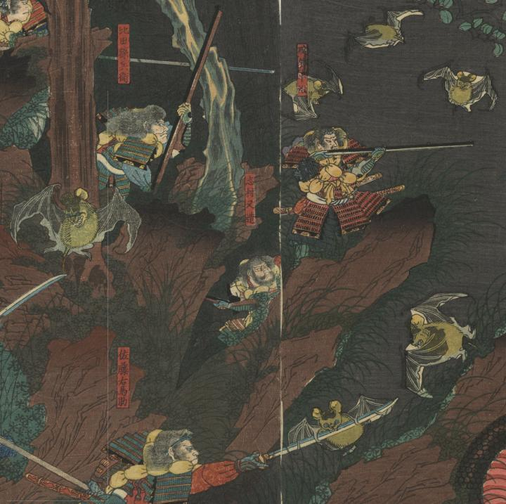

６羽の蝙蝠が飛んでいる。一羽は、刀にとまっている。
著作者：一英齋芳艶／出典：親書誌：U426_nichibunken_0395：太平記焼山越之圖；タイヘイキ ヤケヤマゴエ ノ ズ／日付：2015／資源識別子：U426_nichibunken_0395_0002_0003
Copyright (c)2010- International Research Center for Japanese Studies, Kyoto, Japan. All rights reserved.